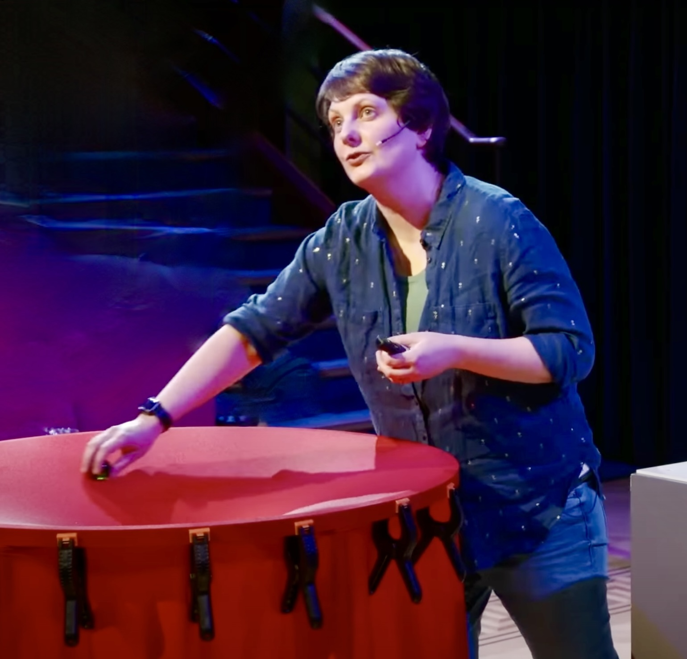

Outreach
I work on Einstein’s theory of General Relativity (GR), a theory of gravity which tells us that spacetime is curved by the presence of energy and matter. What is fascinating is that GR really challenges your inbuilt perceptions about what time and space actually are. Human brains evolved in a weak gravity environment and as a result we have an effective, but incomplete, model of how things work which we rely on to solve everyday tasks. Physics helps us to probe deeper and when we do what we find is absolutely mind-blowing – GR is completely counter-intuitive in many respects. I sometimes want to shake people on the street and say “Do you know about this? Do you understand what it means? Because it’s amazing, and I can’t believe that you will live your whole life without thinking about it”. Since I don’t want to be arrested for shaking people in the street and telling them about my research, I try to do it through official events, some of which are listed below.
Science is for everyone
"We look at science as something very elite, which only a few people can learn. That's just not true. You just have to start early and give kids a foundation. Kids live up, or down, to expectations." - Mae Jemison (the first black woman in space)
Popular science
I am trying to start a Patreon page called "Unlearning Gravity". My current plan is to create a course of lectures on general relativity, really focussing on the basics and where necessary "unlearning" a lot of the unhelpful approximations you may have encountered in childhood physics courses. These are targeted at people with some relevant background, at the level of rusty high school maths and physics. So far I have failed due to too many other commitments, but stay tuned as I'm hoping 2025 will be the year it finally happens!
I will be giving a talk at the New Scientist Live event in October 2025, see details here.
I was invited to give a Royal Institution lecture on "The Limits of Astrophysics", which you can watch here.
I wrote an article on gravitational waves from warp drives that received quite a lot of press attention (good and bad!). My favourite articles on it were the piece we wrote for The Conversation, and the PBS spacetime episode (for which credit to my colleague Richard Dyer from Cambridge who wrote the script).
I appeared in several BBC Radio 4 programmes including an episode of In Our Time, Curious Cases, The Curious Cases of Rutherford and Fry with episodes here and here.
I was invited to give the IoP Oxford Lecture on "Gravity's role in the story of our Universe", which you can watch here.
In May 2016 I spoke at the Soapbox Science event to promote women in science. You can read more about this and my thoughts on the event here.